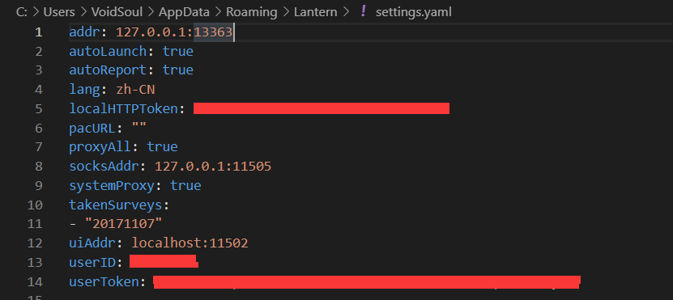

lantern 开启代理供局域网内其他电脑使用
background
由于工作需要，需要在Windows主机上创建虚拟机运行Ubuntu，而蓝灯账号已经绑定了三台设备了，只能想办法让蓝灯作为局域网内的代理。于是研究了下蓝灯怎么设置代理能让局域网内电脑访问，以及Ubuntu上如何连接到代理服务器。
lantern 配置文件
首先右键桌面上的Lantern图标，选择“打开文件位置”，即可进入lantern的安装目录。
在其中寻找一个setting.yaml的文件。
想办法用一个编辑器打开。默认设置可能如下。

我们要修改其中的addr和socksAddr。
其中，192.168.6.233是运行蓝灯的电脑在局域网中的IP，8789和8790是端口。
接着，重启蓝灯，即可看见IP修改生效。
配置ubuntu代理和git代理
Ubuntu应该要配置至少两个地方，一个是图形界面的proxy，一个是命令行terminal的proxy，只修改一处另外一处是无法生效的。
图形界面
命令行terminal
需要执行两条指令1
2export http_proxy=http://192.168.6.233:8789
export https_proxy=http://192.168.6.233:8789
如果把这两条指令添加到~/.profile中可以保证当前用户每次打开terminal的时候都能访问到代理。
想要撤消修改可以用这两条指令。1
2export http_proxy=""
export https_proxy=""
git中设置代理和取消代理
设置代理1
2git config --global http.proxy http://192.168.6.233:8789
git config --global https.proxy http://192.168.6.233:8789
取消代理1
2git config --global --unset http.proxy
git config --global --unset https.proxy
tips
最好本机IP设成手动分配，否则重启后IP变化导致代理会失效，要重新设置到新的IP上。另外代理关闭后要记得取消Ubuntu和git中的代理设置，否则会无法访问Internet。